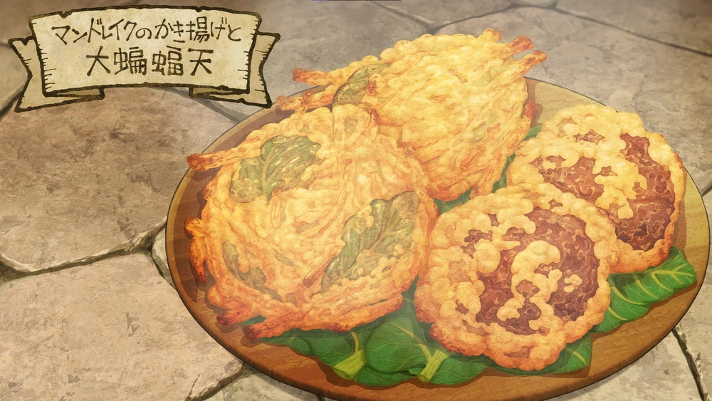

Home
Mandrake & Bat Tempura

Serves: 4
Flavour: Crispy, umami-rich, and slightly suspicious of traps
Ingredients
- 3 medium Mandrakes (shredded)
- 400 grams Big Bat breast meat (thinly sliced)
- 1 Basilisk egg
- 150 grams Weak flour
- 170 cc Cold water
- 1 tbsp Soy sauce
- 1 tbsp Sake
- Salt (a pinch)
- Garlic & ginger (to taste)
- Olive oil (for deep frying)
Instructions
- Marinate the Bat Meat: Combine soy sauce, sake, garlic, and ginger. Marinate sliced bat meat for 15–30 minutes.
- Prepare the Mandrake: Peel and shred. Handle with care.
- Make the Batter: Beat basilisk egg with cold water and salt. Gently stir in weak flour until slightly lumpy.
- Heat the Oil: Heat olive oil to 170°C (340°F).
- Fry the Tempura: Dip mandrake and bat in batter, fry in batches until golden (2–3 mins each). Drain well.
- Serve: Plate hot with dipping sauce or cave salt.